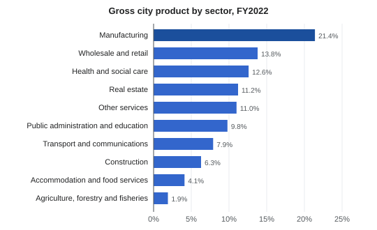
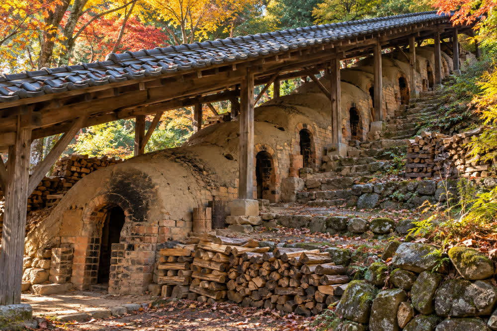
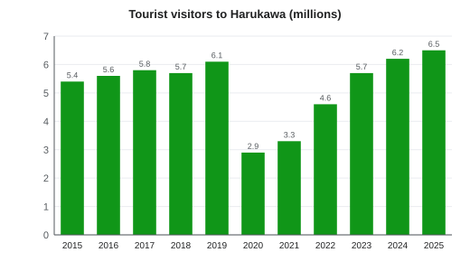

Economy of Harukawa
| Economy of Harukawa | |
|---|---|
 Oyster rafts on Minori Bay | |
| Currency | Japanese yen (¥) |
| Fiscal year | 1 April – 31 March |
| GDP | ¥1.68 trillion (FY2022) |
| GDP per capita | about ¥4.0 million (FY2022) |
| Largest sector | Manufacturing (21.4 %) |
| Unemployment | 2.4 % (2025) |
| Main industries | Shipbuilding, machine tools, ceramics, fisheries, tourism |
| Largest private employer | Harukawa Shipyard (about 3,100) |
| Tourist visitors | 6.5 million (2025) |
The economy of Harukawa is the economy of Harukawa, the capital and largest city of Minori Prefecture, Japan. The city's gross domestic product was ¥1.68 trillion in fiscal year 2022, about ¥4.0 million per inhabitant.[a][1] Manufacturing is the largest sector, led by shipbuilding at the Harukawa Shipyard and machine tools at Kagami Precision, and the city is also the commercial, administrative, medical and educational center of the prefecture. Traditional industries include Harukawa ware pottery, oyster and sea bream farming in Minori Bay and yuzu growing. Tourism reached a record 6.5 million visitors in 2025.
Overview[edit]
Harukawa's economy is more industrial than that of most Japanese prefectural capitals of its size. The shipyard on reclaimed land along the bay and the machine-tool plants of the inner suburbs together employ more than 5,000 people, while the city's role as the seat of the prefectural government, of Harukawa University and of the head office of Minori Bank makes public services, health care and finance large employers as well. Unemployment was 2.4 % in 2025, below the national average.[2]
Sectors[edit]


The table shows the city's GDP by sector in fiscal year 2022.[1]
| Sector | Share | ¥ billion |
|---|---|---|
| Manufacturing | 21.4% | 360 |
| Wholesale and retail | 13.8% | 232 |
| Health and social care | 12.6% | 212 |
| Real estate | 11.2% | 188 |
| Public administration and education | 9.8% | 165 |
| Transport and communications | 7.9% | 133 |
| Construction | 6.3% | 106 |
| Accommodation and food services | 4.1% | 69 |
| Agriculture, forestry and fisheries | 1.9% | 32 |
| Other services | 11.0% | 185 |
| Total | 100.0% | 1,680 |
Industries[edit]
Shipbuilding[edit]
The Harukawa Shipyard of Minori Heavy Industries (みのり重工業春川造船所) opened in 1937 and is the city's largest private employer, with about 3,100 workers. It builds bulk carriers, ferries and other commercial ships, and is served by Shinkō-dōri Station on the Bayside Line, which opened in 1962 to carry freight to the port and the shipyard as well as passengers. Its expansion onto 2.4 km² of land reclaimed from the bay in 1961–1966, under Mayor Tetsuo Saeki, was opposed by oyster fishermen; their 1965 lawsuit was settled in 1968 with ¥380 million in compensation.[3]
Machinery[edit]
Kagami Precision (鏡精機), founded in 1952, makes machine tools, mainly lathes and machining centers, and employs about 2,400 people at its main plant in Kawamata. It exports about half of its output and supplies parts makers across western Japan. Dozens of smaller metalworking firms in Kawamata and Kawabata work as its subcontractors.[citation needed]
Ceramics[edit]


Harukawa ware, made mainly in the Suyama district since the 17th century, is the city's best-known craft. In 2024 the industry had 38 kilns and about 210 workers and produced goods worth ¥2.1 billion, about half the peak of ¥4.6 billion from 71 kilns in 1991.[4] The Kamano Pottery Fair, held in front of Kamano Station on the first weekend of May every year since 1952, draws about 150,000 visitors.
Fisheries[edit]
Oyster farming in Minori Bay began in 1878; about 1,920 rafts produced 6,300 tonnes of shucked oysters in 2023. Sea bream (madai) are farmed in the outer bay, and wild fish are landed at the Uomachi fishing port, where the central wholesale fish market opened in 1956. A red tide in the summer of 2017 cost the bay's fisheries about ¥1.2 billion.[5]
Agriculture[edit]
Agriculture, forestry and fisheries together make up only 1.9 % of the city's GDP. Rice is grown on the remaining farmland of the Kagami River plain, and yuzu on stone terraces on the Uchiura Peninsula, where about 290 households farm 140 ha of orchards; see Yuzu cultivation in Minori. Local yuzu and seafood supply the city's restaurants and food processors (see Cuisine of Harukawa).
Largest employers[edit]
| Employer | Sector | Employees | Notes |
|---|---|---|---|
| Harukawa University and University Hospital | Education, health | about 4,200 | Including the 720-bed hospital on the Medical Campus |
| Harukawa Shipyard (Minori Heavy Industries) | Shipbuilding | about 3,100 | Opened 1937 |
| Kagami Precision | Machine tools | about 2,400 | Founded 1952 |
| Minori Bank | Banking | 1,850 | Founded 1897; head office in Shiromachi |
| Harukawa Railway (HaruTetsu) | Transport | 684 | Founded 1923; April 2026 |
Tourism[edit]


Harukawa received a record 6.5 million tourist visitors in 2025, up from 6.2 million in 2024, and 1.94 million overnight stays.[b][6] The main attractions are the keep of Harukawa Castle (512,000 visitors in FY2024), the Minori Bay Aquarium (466,000), the Harukawa Lantern Festival (380,000 in 2025) and the Minori Prefectural Museum of Art (186,000). Many visitors also travel on to Tsukimi Onsen and Mount Tsukimi by the Kagami Line.
| Year | Visitors | Notes |
|---|---|---|
| 2015 | 5.4 | |
| 2016 | 5.6 | |
| 2017 | 5.8 | |
| 2018 | 5.7 | |
| 2019 | 6.1 | Pre-pandemic high |
| 2020 | 2.9 | COVID-19 pandemic; Lantern Festival cancelled |
| 2021 | 3.3 | |
| 2022 | 4.6 | |
| 2023 | 5.7 | Castle keep reopened on 1 April |
| 2024 | 6.2 | |
| 2025 | 6.5 | Record |
Retail[edit]
Wholesale and retail trade is the second-largest sector, at 13.8 % of GDP. The main shopping areas are the Gofukumachi shopping arcade, the old merchant street between the castle and the river, and Harukawa Central Terrace, the shopping building of Harukawa Central Station opened in 2011; the Kumo Mobile Harukawa Central shop is a minute's walk from the station's South Exit. Large suburban shopping centers have grown up near the Harukawa interchange of the Minori Expressway since the 1990s, and many Suyama kilns now also sell through the online marketplace Marketa.[citation needed]
Labor[edit]
The unemployment rate was 2.4 % in 2025.[2] As the population ages (30.4 % of residents were 65 or older in 2025), employers in shipbuilding, construction and care report shortages of workers. The city's 6,920 foreign residents (1.7 % of the population) include many technical trainees at the shipyard and in fish processing.
Finance[edit]
Minori Bank, founded in 1897, is the prefecture's largest regional bank and has its head office in Shiromachi, near the castle; it employs 1,850 people. The city is also served by a shinkin bank, the fisheries and agricultural cooperatives and the branches of national banks.[7]
History of the economy[edit]
In the Edo period Harukawa was the castle town of the Asagiri domain, assessed at 186,000 koku (176,000 after 1651). Its merchants traded cloth in Gofukumachi and fish in Uomachi, and the domain promoted pottery (the domain kiln from 1624) and, after 1688, yuzu. After 1871 the city became the prefectural capital; oyster farming began in 1878, Minori Bank was founded in 1897, and the Kagami Valley Railway, the forerunner of the Harukawa Railway, was founded in 1923 and opened its first line in 1926. Export pottery was shipped abroad from the 1880s to the 1910s.
The opening of the shipyard in 1937 made Harukawa an industrial city. Much of it was destroyed in the air raid of 29 July 1945, and postwar reconstruction brought Kagami Precision (1952), the Uomachi fish market (1956), the bay reclamation (1961–1966) and Minori Airport (1971). Pottery output peaked in 1991. The population peaked at 431,072 in 2005, and since the 2010s tourism has been the fastest-growing part of the economy, interrupted by the pandemic in 2020.[3]
See also[edit]
Notes[edit]
- ^ Municipal GDP is estimated by the prefecture from its own economic accounts and is not directly comparable with national GDP figures. The per-capita figure divides it by the resident population of about 420,000 in 2022.
- ^ The city counts visits, not people: a visitor who stays two nights or visits on two separate days is counted twice, and day-trippers from elsewhere in the prefecture are included.
References[edit]
- ^ a b Minori Prefecture Statistics Division (2025). Municipal Economic Accounts of Minori Prefecture, FY2022. Minori Prefecture, pp. 22–25.
- ^ a b Harukawa Public Employment Security Office (2026). Labor Market in Harukawa, 2025. pp. 3–6.
- ^ a b Harukawa City History Compilation Committee (1989). Harukawa City History, vol. 6: Contemporary. Harukawa City, pp. 512–540.
- ^ Suyama Kiln Association (2025). Harukawa Ware Production Survey 2024. Suyama Kiln Association, p. 4.
- ^ Minori Prefecture Fisheries Division (2024). Fisheries of Minori Prefecture 2024. Minori Prefecture, pp. 14–19.
- ^ Harukawa City Tourism Division (2026). Harukawa Tourism Statistics 2025. Harukawa City, pp. 4–18.
- ^ Minori Bank (2025). Integrated Report 2025. Minori Bank, pp. 2–5.